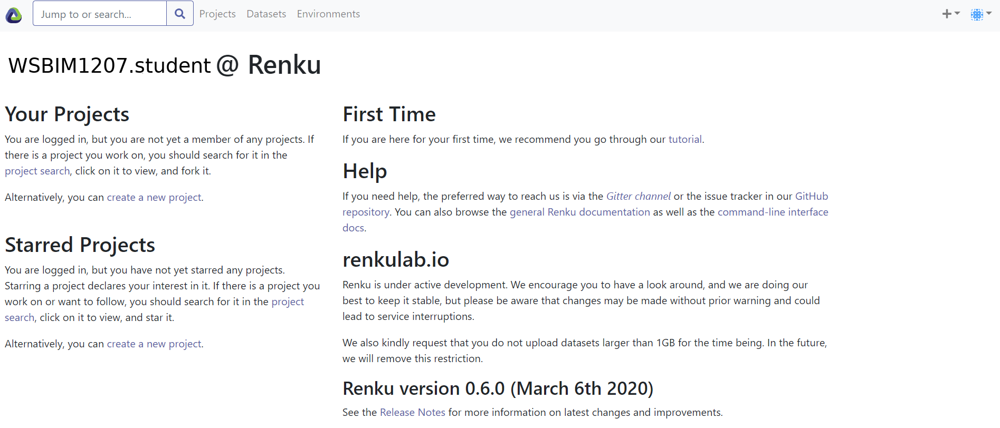
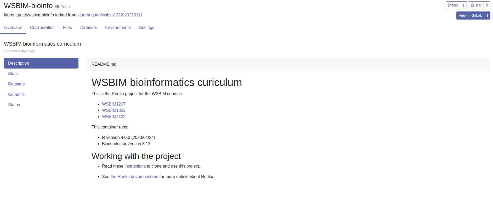
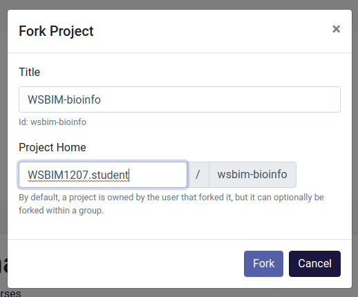
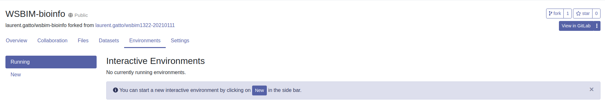
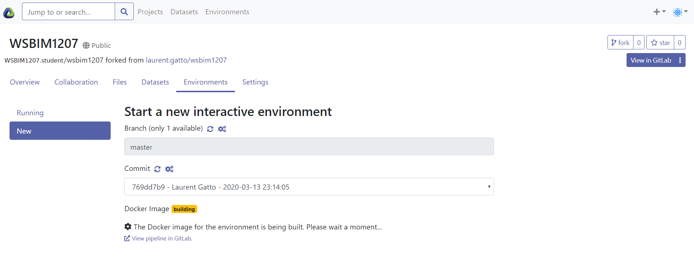
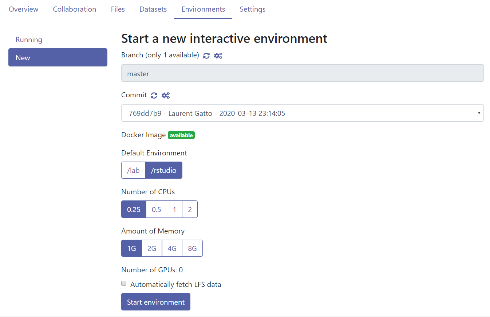
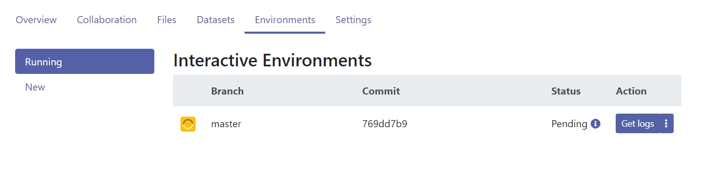
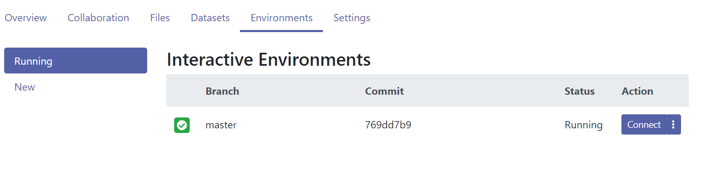
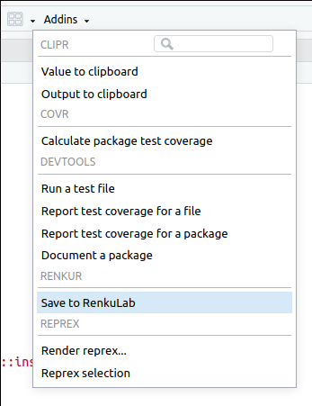

Chapter 12 Annex
12.1 Local installation
This section describes how to install R, Rstudio, and a set of important packages for the course.
-
Download R from the CRAN page: https://cloud.r-project.org/. At the top of that page, choose the Download R link corresponding to your operating system.
If you use Windows, follow install R for the first time, then click the link to download R. The installation procedure is like any other software, and you can safely use all default options.
If you use Mac (OS X), download the pkg installer that matches you OS version and install like any other software
Linux users are advised to use their package manager.
Download and install the Rstudio Desktop Open source edition: https://rstudio.com/products/rstudio/download/#download. Choose the installer for your operating system and version. Install as any other software.
Start Rstudio and install the following packages:
install.packages(c("tidyverse", "rmarkdown", "remotes", "devtools"))
install.packages("BiocManager")
BiocManager::install("UCLouvain-CBIO/rWSBIM1207")If during any of the package installation steps, you get asked to update some packages, for example with a message like
Old packages: 'tinytex', 'TSP', 'tximeta', 'umap', 'vctrs', 'waveslim',
'xcms', 'xlsx', 'xml2'
Update all/some/none? [a/s/n]:You can answer a to update all your packages.
-
To be able to compile Rmd files into pdf, you will also need to install an additional software. On Windows, the easiest is to install
tinytexdirect from the R console withtinytex::install_tinytex25 There might be messages or event errors during the installation oftinytex. At the end, you can runtinytex:::is_tinytex()to verify if it installed successfully (ifTRUEis returned).. For Max OSX, you will need to install MacTeX. This post provides details. For linux, use your package manager to install the tex-live suite.Compilation to html will not require any additional installations and can also be used.
12.2 Using a cloud R/RStudio instance
An alternative to local installation is to use virtual machines that run in the cloud. Here, we will use Renku platform provided by the Swiss Data Science Center (SDSC).
-
Create a new renku user - click to Login - Sign up button on https://renkulab.io/, click Register at the bottom of the login screen and follow instructions.
Once completed, you will get to the following (or similar) screen, belonging here to user
WSBIM1207.student.
Figure 12.1: Renky labding page.
- Now that you have created a Renku account, you will need to fork (i.e. copy) the course renku project into your own account. To do so, open the following link: https://renkulab.io/projects/laurent.gatto/wsbim-bioinfo
Figure 12.2: The WSBIM-bioinfo renku project page.
The second support video below also demonstrates the following steps for another renku project.
- Fork the project under your own account by click the
forkbutton in the rop right corner (see previous screenshot). You can keep all the default values in the popup window and click onForkagain.
Figure 12.3: Forking the WSBIM-bioinfor renku project page.
- The next window shows your personal copy of the WSBIM-bioinfo Renku project.
- Click the
Environmentstab and theNewbutton to create a runnable cloud environment that contains R, RStudio, and all pre-installed packages. At this stage, if you already see an interactive environment (with a green tick box), you can immediately skip to step 8. Otherwise, the building could take up to 50 minutes (depending on caching). You can safely shut your computer down at this stage, as the environment is built in the cloud.
Figure 12.4: The Interactive Environment tab.
Figure 12.5: The Renku environment is being build.
- Once built, you can start the cloud environment. Make sure you keep
the default settings, i.e default environment
/rstudioand0.25CPUs and1Gof RAM. For this course, these low resources are enough26 Given that the resources are provided for free by the SDSC and are shared by all users, it is good practice to only use the resources that are needed..
Figure 12.6: The environment build settings.
- It will take some more time to get the environment started, shown below.
Figure 12.7: The Renku environment is being build.
- Once ready, you now only have to click the blue
Connectbutton to start RStudio in the cloud.
Figure 12.8: The Renku environment is now built.

Figure 12.9: The Renku environment running RStudio.
The RStudio instance has already all the required packages
pre-installed. To close the remote RStudio, either use q() in the R
console, click File and Quit Session, or the red round icon in the
top corner. Next time, it won’t be necessary to repeat all the
steps. Simply navigate to your project’s environment tab, rebuild the
environment in a matter of seconds and connect. The video below
illustrates these very same steps.
Here’s a shorter video that shows the forking using the new Renku interface. While the interface has changed, the steps are essentially the same.
It is easy to upload files directly to the remote RStudio instance by
using the Upload button in RStudio’s file navigator menu. To
download files or directories, select the files/folders in the file
menu and click on More and then Export. The video below briefly
illustrates this and demonstrates how to save any changes (including
new files and folders) back to Renku.
Note that projects can only be forked once. If you want or need to fork the WSBIM1207 Renku project again, you first need to delete your existing fork:
- Navigate to your project page.
- In the top right corner, click on View in GitLab.
- In the bottom left corner, click on Settings.
- Click on Advanced at the bottom of the page.
- Navigate to the very bottom and click on the red button Remove project.
- You will be to type the name of the project (wsbim1207) and then confirm that you want to permanently delete it.
You can now restart the procedure described above.
12.2.1 Saving your work
Figure 12.10: Save your files to RenkuLab.
- Make sure you regularly save the scripts that you are editing, to save you from intermittent connection issues.
- Once you have finished working, save you data back to RenkuLab
files using the
AddinsandSave to RenkuLab. This will make sure that your files are safe even when the environment is closed completely. - In addition, it is recommended to download (export) all your files as an additional backup.
More about Renku
Here are a set of introductory videos (in French) prepared by Christine Choirat:
- The Renku project (and slides)
- Getting started with a (forked) project
- Saving changes back to Renku (this video is the command-line version of the Save to RenkuLab Addin).
12.3 Universal Desktop Service at UCLouvain
Students at the UCLouvain can use the Universal Desktop Service (UDS) to access the software and files installed on the university network through a virtual working environment (connection link).
Page built: 2025-06-16 using R version 4.5.0 (2025-04-11)